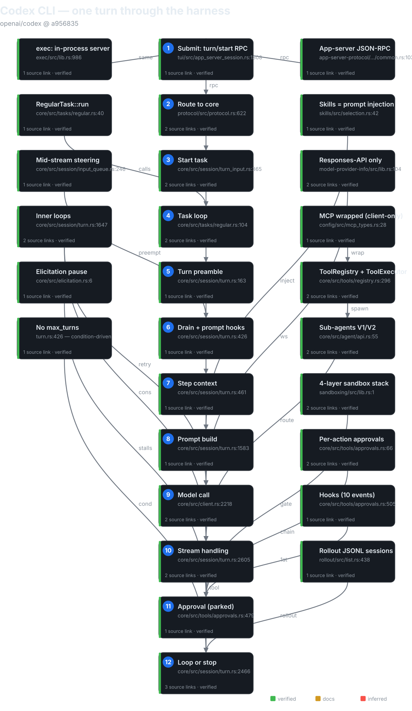
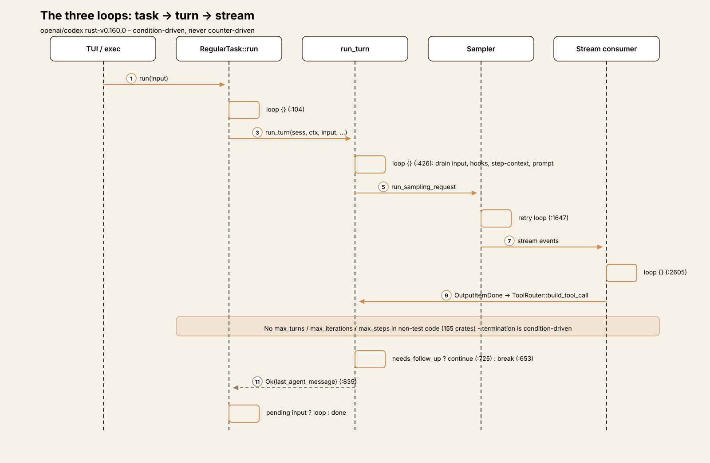
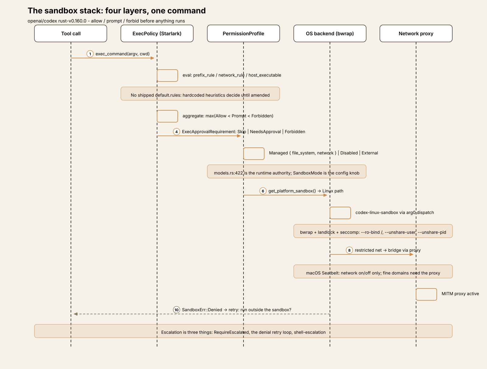
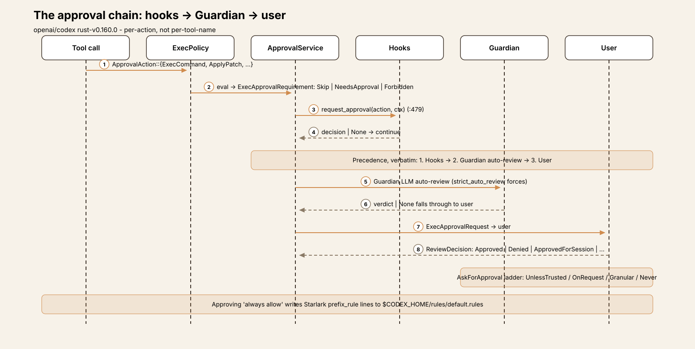
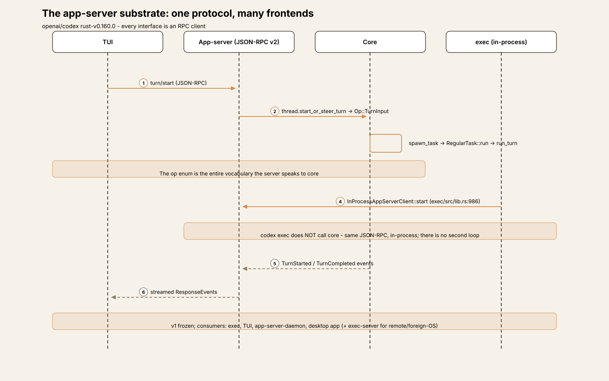

Agent Harness Anatomy #5: Codex CLI — the sandbox-first agent that speaks one wire protocol
Series: Agent Harness Anatomy — top-down dissections of real agent harnesses, grounded in verifiable source code. Every behavioral claim below carries a footnote to a pinned GitHub permalink; the full evidence lives in the endnotes.
Version block
- Repo: openai/codex
- Pinned: tag
rust-v0.160.0→a956835d020762cb2b570053af06f643a11c0ecc(2026-10-01) - Language: Rust (cargo workspace
codex-rs/, 154 members) - License: Apache-2.0
- Claim under test: "a local, extensible, open source AI agent"
- Scope: this teardown covers the Rust CLI (
codex-rs/), the series' sandbox/security axis. The legacy TypeScript CLI (codex-cli/at repo root) is out of scope.1
| Crate | Non-test .rs |
Role |
|---|---|---|
core |
409 files, 123,071 LOC | THE product crate: turn loop, tools, sandboxing, sessions |
tui |
660 files, 271,033 LOC | Interactive terminal UI (Ratatui; genuinely large, no generated bulk) |
app-server |
119 files, 50,602 LOC | JSON-RPC v2 substrate — the real interface layer |
exec-server |
89 files, 33,513 LOC | Standalone remote/foreign-OS exec service |
cli |
50 files, 27,788 LOC | CLI binary, ~25 subcommands |
protocol |
56 files, 28,203 LOC | Shared protocol types (incl. PermissionProfile) |
config |
64 files, 21,549 LOC | 9-layer config stack |
codex-mcp |
36 files, 13,081 LOC | MCP client runtime |
hooks |
28 files, 11,657 LOC | Hook system (12 lifecycle events) |
rollout |
22 files, 9,423 LOC | Session persistence (JSONL) |
model-provider |
20 files, 6,442 LOC | Provider abstraction |
apply-patch |
9 files, 4,828 LOC | Codex's own patch format + application |
exec |
8 files, 4,350 LOC | Non-interactive mode (an app-server client) |
tools |
24 files, 3,398 LOC | Shared tool definition layer (ToolExecutor) |
execpolicy |
11 files, 1,954 LOC | Starlark exec-policy language |
skills |
9 files, 1,493 LOC | SKILL.md discovery/injection |
Workspace total: 3,017 non-test .rs files under the workspace crates' src/
directories (excluding *tests.rs and tests/).
Entry is the CLI binary at codex-rs/cli/src/main.rs → cli_main;
bare codex launches the TUI; the agent loop is run_turn at
codex-rs/core/src/session/turn.rs.1

Explore the interactive architecture diagram Pan, zoom, and click any node for its source module referenceThe mental model
Codex is a sandbox-first, approval-gated pair programmer that speaks
exactly one wire protocol. Three inversions define it against the
series so far. Against pi: where pi's interfaces subscribe to one event
stream, Codex's interfaces are all JSON-RPC clients of one app-server
— the TUI, exec, and the managed daemon drive core through it, and even
codex exec spins an in-process app-server rather than calling core
directly.2 Against aider: where aider negotiates with the model through
text edit formats and remembers via git, Codex speaks native Responses
API function tools — and there is no Chat Completions path at all; the
WireApi enum has exactly one variant, and "chat" deserialization is
explicitly rejected.3 Against Cline and Goose: where Cline's safety is
approval-first and Goose's is preventive-plus-judge, Codex's is
sandbox-first — a four-layer stack (Starlark exec-policy language →
declarative permission profiles → three OS backends → MITM network
proxy) that decides allow/prompt/forbid before anything runs, with
approvals as the policy/UX layer on top.4
The governing tradeoff: Codex pays for the heaviest safety machinery in the series — OS-level MAC backends, not shell wrappers — and funds it with the narrowest wire protocol. One API shape, many doors in: 5 built-in providers behind 8 auth modes. If you're building a harness, that's Codex's thesis in one sentence: constrain the blast radius in the OS, and you can afford to let the model act.
Package map
A layered cargo workspace, dependency direction running strictly downward:1
model-provider-info WireApi enum (Responses only), provider metadata
↑
model-provider ModelProvider trait, auth plumbing, capabilities
codex-mcp MCP client runtime
↑
core turn loop, tool registry, sandboxing, sessions,
approvals, compaction, hooks, sub-agents
↑
app-server JSON-RPC v2 substrate: thread/start|resume|fork|...,
consumed by exec, TUI, daemon, desktop app
↑
cli / tui / exec all drive core through app-server; exec is in-process
codex-rs/core/src key dirs: session/ (the loop: turn.rs 3,187
lines, handlers.rs, turn_input.rs, input_queue.rs), tools/
(registry, router, orchestrator, approvals, handlers/, runtimes/),
sandboxing/ (platform backends), exec_policy.rs, unified_exec/,
compact*.rs, guardian/ (LLM auto-review), agent/ (sub-agent
control), elicitation.rs.
The core loop
Three nested loops, not one — each at a different altitude:5
- Task loop —
RegularTask::run(core/src/tasks/regular.rs:40): re-runs whole turns while pending user input remains (loop {}at:104). - Turn loop —
run_turn'sloop {}(core/src/session/turn.rs:426): each iteration is one sampling request — one model call plus all the tools that response triggered. This is the agent loop in the article's sense. - Inner loops —
try_run_sampling_request's stream-consumer loop (turn.rs:2605) plus a retry loop inrun_sampling_request(turn.rs:1647).
run_turn's signature, verbatim (turn.rs:163-172):6
pub(crate) async fn run_turn(
sess: Arc<Session>,
turn_context: Arc<TurnContext>,
mut input: Vec<TurnInput>,
mcp_startup_requirements: &mut McpStartupRequirements,
prewarmed_client_session: Option<ModelClientSession>,
cancellation_token: CancellationToken,
) -> CodexResult<Option<String>>
It returns the last agent message. The loop is condition-driven
(loop {} + break/continue), not counter-driven — there is no
iteration counter anywhere in the 154 crates.7
Loop-body stages per iteration (turn.rs:426-838): drain pending user
input → prompt-hook inspection → step-context capture (re-resolves tools,
permissions, environments) → time reminder + world state → prompt build
→ sampling request → post-sampling bookkeeping → mid-turn compaction
rollover (continue) → stop path (stop hooks, legacy after-agent hook,
post-turn compaction) → continue/break → error arms.5
Termination: the model sends only an assistant message; a stop hook's
should_stop; hook-blocked input; a terminal error; user interrupt
(Op::Interrupt → abort_all_tasks(Interrupted) → TurnAborted at
every await point); or the server's end_turn: false absent with no tool
calls.8 No max_turns, max_iterations, or step cap exists in
non-test code — an exhaustive grep across all 154 crates finds only
unrelated caps (a guardian token budget, a tool-search byte cap, TUI
history-read limits).7 The doom-loop guard is a retry budget plus
compaction-once-per-step plus the user interrupt — reactive, like
Cline's, but without even Cline's identical-call counter.9
Tool dispatch is concurrent by default: ToolRouter::build_tool_call
per OutputItemDone (stream_events_utils.rs:325) → futures in
FuturesOrdered → drain_in_flight (turn.rs:2466) records results
into history before the next iteration. Tool errors become failure
results, never break the loop. parallel_tool_calls: true on every
prompt.10
Approvals park the loop inside the tool future.
ApprovalService::request_approval (tools/approvals.rs:479) runs the
chain — hooks, then the Guardian LLM auto-reviewer, then the user — and
the turn loop cannot proceed past drain_in_flight until the decision
lands. Denials become failure tool results. Elicitation is a separate
session-wide pause counter that stalls tool-result delivery without
breaking the loop.11
Compaction fires at four points: pre-turn, mid-turn rollover on
token-limit (with continue), post-turn threshold check, and a
one-per-step guardian-budget recovery. Two engines are selected by
provider capability: local summarization vs remote V2 over the Responses
endpoint.12

Trace one turn
Trace input: the user types refactor the retry helper to use exponential
backoff in the TUI and hits Enter. The trace crosses three process
boundaries — TUI → app-server → core — because every interface is an
RPC client:13
- Submit. The TUI sends app-server RPC
turn/start(tui/src/app_server_session.rs:1308-1341), packaging the text with sandbox-policy and permission overrides resolved from config. - Route to core.
turn_processor.rs:630→thread.start_or_steer_turn(...)→Op::TurnInput(protocol/src/protocol.rs:625) →session/handlers.rs:485→turn_input::handle. The op enum is the entire vocabulary the server speaks to core.13 - Start task. No active turn →
spawn_task(turn_input.rs:365) →tasks/mod.rs:287recordsActiveTurnand spawns with a freshCancellationToken.13 - Task loop.
RegularTask::run(tasks/regular.rs:40) emitsTurnStartedand enters itsloop {}(:104), callingrun_turn(:105) with the input, MCP startup requirements, and any prewarmed client session.5 - Turn preamble. Inside
run_turn(turn.rs:163): guardian check, pre-sampling compaction, MCP resolution, the first step-context capture, skill/plugin injection, session-start hooks — then the user message is recorded to history.5 - Iteration 1 — drain and inspect. The
loop {}body (turn.rs:426): no pending input to drain on a fresh turn; prompt-hook inspection runs (:426-446). - Iteration 1 — step context. Tools re-resolved, approval policy
bound to the turn (
turn.rs:461-503); time reminder and world state assembled. - Iteration 1 — prompt.
clone_history().await.for_prompt(...)plusexecuted_tool_calls.attach_to_prompt→build_prompt→Prompt { input, tools, parallel_tool_calls: true, base_instructions, ... }(turn.rs:1583-1592).14 - Iteration 1 — model call.
run_sampling_request→try_run_sampling_request→client_session.stream(...)→ WebSocket-first (permanent HTTP/SSE fallback), both POSTing to/responses(client.rs:2218-2263). The request carriesstore: false,stream: true, and a thread-scopedprompt_cache_keyfor cache affinity (client.rs:886-1007).314 - Stream handling. The inner loop (
turn.rs:2605) consumesResponseEvents: text deltas stream to the TUI live; each completed tool call arrives asOutputItemDone→ToolRouter::build_tool_call(stream_events_utils.rs:325), spawned intoin_flightwithneeds_follow_up = true.10 - Approval, parked in the tool future. For any gated call,
ApprovalService::request_approval(tools/approvals.rs:479) runs hooks → Guardian → user; the turn loop sits indrain_in_flight(turn.rs:2466) until the decision lands. Denials become failure tool results, not loop breaks.11 - Loop or stop.
drain_in_flightrecords everyFunctionCallOutputenvelope into history (turn.rs:2466-2492).needs_follow_up = true→continue(turn.rs:757): iteration 2 rebuilds the prompt from history now containing tool results. The model replies with only an assistant message →!needs_follow_up→ stop hooks → post-turn compaction check →break(turn.rs:653-755).run_turnreturnsOk(last_agent_message)(:839);TurnCompletedis emitted and the TUI renders from the streamed events.58
Steering variant: mid-stream user input cancels the step's preempt
token (input_queue.rs:246); run_sampling_request returns early with
needs_follow_up: true; the loop drains the new input at its top and
re-samples — the same shape as Cline's mid-run steering, one layer
lower.5 Exec variant: codex exec drives the identical pipeline
through its in-process app-server — there is no second loop.2
The sandbox stack
The sandbox stack clears the new-section bar. It is not one mechanism but four stacked layers, each with its own language, its own authority, and its own failure modes — and it is precisely the series' stated angle for this teardown. No other harness in the series has anything at this altitude: aider has no sandbox, Cline's commands run unsandboxed in the user's shell, Goose checks extensions at install time and then trusts them. Codex constrains the blast radius in the OS.
Layer 1 — the exec-policy language. A Starlark per-command policy
language (codex-execpolicy crate) that decides allow / prompt /
forbid before anything runs. Exactly three builtins
(execpolicy/src/parser.rs:347-473): prefix_rule (argv-prefix
matching, first token keys the lookup; match/not_match examples
validated at parse time), network_rule (wildcards forbidden at parse,
rule.rs:196-200), host_executable (a PATH-spoofing defense).
Decisions aggregate by max: Allow < Prompt < Forbidden
(decision.rs:7-27). This layer is the approval gate — and it starts
empty: no shipped default .rules file exists (verified by
find), so hardcoded heuristics decide unmatched commands until the
user amends policy. Approving "always allow" appends prefix_rule(...)
lines to $CODEX_HOME/rules/default.rules, hot-swapped via
ArcSwap.15
Layer 2 — the permission profile. The declarative what:
PermissionProfile (protocol/src/models.rs:422) =
Managed { file_system, network } | Disabled ("do not apply an
outer sandbox") | External { network } (filesystem isolation by an
external caller). The classic read-only / workspace-write /
danger-full-access names survive only as diagnostic tags —
sandbox_tags.rs maps a live profile back to those names for metrics,
and its header is explicit: "Labels never inspect the filesystem and
must not be used for authorization"
(core/src/sandbox_tags.rs:1-2). The user-facing config knob is still
the legacy SandboxMode enum (protocol/src/config_types.rs:104-114,
default ReadOnly) with a compatibility shim both ways — two policy
models, one name, and the runtime authority is the profile.16
Layer 3 — the platform backends. The OS how
(codex-sandboxing crate + helpers), selected per platform by
get_platform_sandbox() (sandboxing/src/manager.rs:49):
- macOS: Seatbelt via /usr/bin/sandbox-exec with embedded
.sbpl templates, starting from (deny default). The network
block is binary on/off — fine-grained domains need Layer 4.
- Linux: bubblewrap (prefers system bwrap, falls back to the
bundled binary) + landlock + seccomp, driven by the
codex-linux-sandbox helper — which is the codex-exec binary
re-invoked through arg0 dispatch (exec/src/main.rs:1-35).
Mounts --ro-bind / / with writable roots layered on top,
deny-read globs expanded pre-launch, --unshare-user always,
--unshare-pid by default, --unshare-net for restricted
networking.
- Windows: three backends — MXC native PSEC (AppContainer
fallbacks deliberately excluded, mxc-sandbox/src/lib.rs:89-95),
restricted-token (cannot enforce deny-reads — hard errors
instead), and elevated (WFP, deny-read ACLs, a provisioning
service). Two decision sites carry a TODO(anp) to reconcile
them.17
Layer 4 — the network proxy. codex-network-proxy: a local
MITM-capable forward proxy, the only path to the internet in
restricted modes. This is what makes the macOS/Linux network
asymmetry honest — Linux gets a real net namespace plus proxy
bridge plus domain policy; macOS Seatbelt is binary on/off and
fine-grained domains ride the managed proxy.18
Escalation is three distinct things, and the code keeps them
separate: SandboxPermissions::RequireEscalated (declarative "run
outside the sandbox" — blocked when deny-reads exist, because they'd
be silently dropped); the sandbox-denial retry loop (the "run outside
the sandbox?" prompt after SandboxErr::Denied,
core/src/tools/orchestrator.rs:320-490); and shell-escalation — a
patched zsh fork whose execve wrapper asks an in-process server
per-exec() whether to re-run unsandboxed
(shell-escalation/src/unix/).19
The load-bearing seam: malformed .rules fails open to the
requirements policy with a warning (load_exec_policy_with_warning)
— fail-open on syntax, fail-closed on semantics — and hardcoded
heuristics shadow the Starlark language as a second authority for
unmatched commands. Two more honest edges: AllowPrefixRules::
IgnoreForCyberModel can silently strip user-configured allow rules
for certain models, and the docs for both sandboxing and exec-policy
are three-line redirects to a website — the richest semantics doc in
the tree is linux-sandbox/README.md, Linux only.20

Subsystem inventory
1. The approval model (policy/UX half)
Approvals in Codex are per-action, not per-tool-name. The sealed
ApprovalAction enum (tools/approvals.rs:67) enumerates exactly what
can be approved: ExecCommand, WriteStdin, Execve, ApplyPatch,
McpToolCall, NetworkAccess, RequestPermissions. There is no
generic "approve tool X" primitive — write_stdin is an
approval-worthy action category of its own, which tells you how
fine the model is.21
The user-facing ladder is AskForApproval::{UnlessTrusted, OnRequest,
Granular, Never} (protocol/src/protocol.rs:986; OnRequest is the
default). Granular splits the policy surface five ways:
sandbox_approval, rules, skill_approval, request_permissions,
mcp_elicitations. Per call, the exec-policy layer (or a default
requirement when no rule applies) yields an ExecApprovalRequirement
(core/src/tools/sandboxing.rs:153): Skip | NeedsApproval |
Forbidden — deny-reads make unsandboxed execution refuse outright
(sandboxing.rs:239-296): "Denied reads only exist inside the
sandbox."21
The request flow (Session::request_approval, approvals.rs:479-552)
follows a precedence the code states verbatim in a comment: 1.
Hooks → 2. Guardian auto-review → 3. User. The Guardian
(core/src/guardian/) is an LLM auto-reviewer extension; None from
the reviewer falls through to the user — "no contributor is never an
implicit allow" — and strict_auto_review forces the Guardian path
even for Skip requirements. User prompts emit
ExecApprovalRequest events; decisions return via oneshot.
ReviewDecision (protocol.rs:4159) has eight variants:
Approved, ApprovedExecpolicyAmendment,
ApprovedForSession, ApprovedMcpPolicyAmendment,
NetworkPolicyAmendment, Denied, TimedOut, Abort — note how
many of them amend policy, not just the call: approving "always
allow" writes Starlark into $CODEX_HOME/rules/default.rules, and
approving an MCP policy writes a persistent cross-session amendment.
Session caching via with_cached_approval uses canonicalized
command keys.22
Start here: core/src/tools/approvals.rs:479 for the chain,
core/src/tools/sandboxing.rs:153 for the decision type.

2. The tool system
The tool layer is split across two crates: codex-rs/tools/ (the
shared definition layer — ToolSpec, the ToolExecutor trait,
Responses API serialization) and core/src/tools/ (the host:
ToolRegistry as IndexMap<ToolName, RegisteredTool>
(registry.rs:296), ToolRouter, orchestrator.rs for the
approval+sandbox stages, handlers/ per built-in). Registration
distinguishes trusted (core built-ins) from external
(dynamic/MCP/extension; reserved names rejected); duplicate
registration is a hard error. ToolExposure
(tools/src/tool_executor.rs:51) — Direct | Deferred |
DeferredModelOnly | DirectModelOnly | CodeModeOnly | Hidden —
controls visibility: heavy tools (MCP, v1 sub-agents) register
Deferred, and the model calls tool_search to load namespaces on
demand, aider-SwitchCoder style but per-namespace. The per-turn
toolset is assembled in spec_plan.rs (~1,534 lines).23
Built-ins (model-facing names): exec_command, write_stdin,
apply_patch, update_plan, tool_search, request_user_input
(_async), send_message_to_user_async, new_context,
get_context_remaining, curr_time, sleep,
wait_for_environment, view_image, request_permissions,
list_available_plugins_to_install, request_plugin_install,
list_mcp_resources, list_mcp_resource_templates,
read_mcp_resource, <namespace>.<tool> (MCP), spawn_agent
(plus V1 multi_agent_v1.*), and extension tools (notes.*,
history.*, image_gen.imagegen, web.run, memories.*,
*_goal). Tools reach the model as Responses API function tools
(client.rs:912,937).23
The negative that defines the design: no built-in
read_file/write_file/edit/search tool exists in core.
Reads, listings, and searches go through exec_command; edits go
through apply_patch. The model shells out to see the world —
which is exactly why the sandbox stack has to be this good.24
Start here: codex-rs/tools/src/tool_executor.rs for the trait,
core/src/tools/registry.rs:296 for registration.
3. apply-patch
Codex's own patch format — a series institution carried over from
the TS CLI: *** Begin Patch / *** Add|Delete|Update File: /
@@ hunks / *** End Patch, parsed by
apply-patch/src/parser.rs and verified into an ApplyPatchAction
before execution, so the diff can be shown in the approval
prompt; it renders back to unified diff for display. Standalone via
argv[1] --codex-run-as-apply-patch self-invocation — the same
arg0-dispatch trick as the Linux sandbox helper.25
4. MCP
codex-mcp is an MCP client runtime (McpConnectionManager) —
not a server exposing Codex. Servers are configured in
config.toml's mcp_servers (stdio + streamable-HTTP transports)
and their tools are wrapped in McpHandler (a CoreToolRuntime)
under sanitized namespaced names (<namespace>.<tool>), raw names
preserved for protocol calls. Approval is per server/tool via
AppToolApproval::{Auto, Prompt, Writes, Approve}
(config/src/mcp_types.rs:28), settable per-server or per-tool,
with a dedicated connector-attributed prompt UI, session-remember,
and persistent cross-session policy amendments
(ApprovedMcpPolicyAmendment). MCP server-side elicitation is
gated by the granular mcp_elicitations approval mode.26
Contrast the series: Goose's tools are MCP (everything is a
server); Cline's are native AgentTools; pi wraps servers as native
tools; Codex wraps too — but with the richest per-server approval
machinery of the four.
Start here: config/src/mcp_types.rs:28, then McpHandler.
5. Skills, hooks, plugins, slash commands
- Skills are prompt injection, not tools:
SKILL.mdfrontmatter discovery across User/Repo/System/Admin scopes;$skill://mentions →collect_explicit_skill_mentions→ fragments injected into the turn. Plus implicit invocation when a shell command matches a skill's. Same shape as pi and Cline — skills ride the prompt, never the tool registry.27 - Hooks: 12 lifecycle events (
session_start,user_prompt_submit,pre_tool_use,permission_request,post_tool_use,stop,interrupt,pre/post_compact,subagent_start,subagent_stop,session_end) plus the legacyafter_agent. Hooks are shell commands or MCP servers; they can block, rewrite tool input, inject context, or force approval decisions — and they sit at precedence #1 in the approval chain, ahead of the Guardian and the user.28 - Plugins: a manifest declares skills, MCP servers, apps, and
hooks — model tools come from those, never from a direct
"plugin tool" API. There is a
ToolContributorAPI for programmatic registration.29 - Slash commands: a closed TUI-only enum
(
tui/src/slash_command.rs) — not user-extensible. Plugins contribute prompt text through skill interfaces instead.29
6. Sub-agents
Present, in two generations selected by
multi_agent_version (spec_plan.rs:668): V1
(multi_agent_v1.spawn_agent / send_input / resume_agent /
wait_agent / close_agent) and V2 (spawn_agent,
send_message, followup_task, wait_agent,
interrupt_agent, list_agents), depth-limited via
agent_max_depth. AgentControl::spawn
(core/src/agent/api.rs:40); inter-agent communication runs over
agent_message_board.rs and
RolloutItem::InterAgentCommunication; subagents get
nicknames/roles and skip the memory pipeline.30
7. Providers
Responses-API-only — the narrowest wire protocol in the
series. WireApi::Responses is the sole enum variant; "chat"
is rejected at deserialization with
CHAT_WIRE_API_REMOVED_ERROR
(model-provider-info/src/lib.rs:104-129). Transport is
WebSocket-first with permanent HTTP/SSE fallback, both to
/responses (client.rs:2235-2263); stream retries default 5,
hard cap 100 (model-provider-info/src/lib.rs:64-72); terminal
errors are enumerated via retry_delay() → None
(protocol/src/error.rs:389); a WebSocket→HTTP fallback resets
the retry counter; UnboundedConnectionRetries retries
connection failures forever on a 5s→60s backoff.331
Five built-in providers: openai (default), amazon-bedrock,
amazon-bedrock-runtime, ollama (localhost:11434), lmstudio
(localhost:1234) (model-provider-info/src/lib.rs:652-684) — and
the repo comment explicitly refuses third-party bundling; users
add model_providers in config.toml. The ModelProvider trait
(model-provider/src/provider.rs:141) exposes info(),
capabilities() (namespace_tools, image_generation,
web_search, external_web_access, remote_compaction), and
auth plumbing. Eight auth modes (CodexAuth,
login/src/auth/manager.rs:92): API key, ChatGPT OAuth PKCE
(subscription), auth tokens, headers, agent identity, PAT, Bedrock
key/credentials. The broadest auth surface in the series behind
the narrowest wire protocol — one API shape, many doors in.31
8. Prompt construction
Prompt { input, tools, parallel_tool_calls: true,
base_instructions, output_schema, cyber_access_program }
(turn.rs:1583) becomes a ResponsesApiRequest with model,
instructions, input, tools, tool_choice: "auto" —
store: false, stream: true, and a thread-scoped
prompt_cache_key (client.rs:886-1007). Two shapes exist: full
Responses vs responses-lite, which moves instructions/tools
into the input prefix with stable thread-scoped UUIDv5 IDs for
prefix-cache hits. Cache affinity is per-thread; resume is a
client-side rebuild from rollout JSONL — no server-side state.32
Assembly order: base_instructions (model-catalog template or
custom override, provenance-tracked) → developer-role message
(dev instructions + world-state sections: permissions,
environments, tools budget, collaboration mode) → user-role
message (AGENTS.md, memory ≤8.9KB, env, skills, hooks). The repo's
AGENTS.md house rules for prompt fragments: no history rewrite,
nothing over 10K tokens, every fragment bounded with a hard
cap.32
9. Sessions
Rollout JSONL at
~/.codex/sessions/YYYY/MM/DD/rollout-<ts>-<uuid>.jsonl
(rollout/src/list.rs:438); 12 RolloutItem variants
(history/src/lib.rs:201) — SessionMeta, ResponseItem,
InterAgentCommunication, Compacted, TurnContext,
TokenUsageRecord, WorldState, SecurityRiskScore,
RetainedContext, EventMsg, and more. A codex-state crate
mirrors metadata into SQLite; thread-store keeps a session
index. Resume is thread/resume RPC → rollout re-read
(InitialHistory::{New, Cleared, Resumed, Forked}); fork via
thread/fork with three persistence modes (Copied,
CopiedDeferred, Referenced).33
Cross-session memory is a first-class pipeline:
$CODEX_HOME/memories[_v2]/, two-phase LLM
extraction/consolidation at root-session startup, feature-gated,
skipped for subagents. CLI surface: codex resume | fork |
archive | unarchive | delete | queue.34
10. Interfaces
- CLI (
cli/src/main.rs): ~25 subcommands; barecodex→ TUI;exec,review,apply,resume,fork,queue,agents,login,mcp,plugin,marketplace,cloud,doctor,sandbox,debug— plus hiddentcp-tunnel,execpolicy,responses-api-proxy,stdio-to-uds. - TUI (
tui/): interactive Ratatui UI against an in-process or remote app-server daemon. exec: non-interactive — and it does not call core. It starts anInProcessAppServerClient(exec/src/lib.rs:986) and drives everything via JSON-RPC. Headless event processors,--jsonJSONL output, and the escape hatch--dangerously-bypass-approvals-and-sandbox.- app-server: the full JSON-RPC v2 API (
initialize,thread/*,memory/*,rollout/compress, config,userVerification/*, …), v1 frozen; consumers are exec, the TUI, theapp-server-daemon(managed shared daemon), and the desktop app. - exec-server: a separate standalone service with its own protocol for remote/foreign-OS execution.2

11. Config
A 9-layer stack
(config/src/config_layer_source.rs:6): PackagedDefaults → Mdm
→ System → EnterpriseManaged → User (~/.codex/config.toml +
named profiles) → Project (.codex/) → SessionFlags (session
overrides, including CLI --config), plus two legacy
managed-config layers (LegacyManagedConfigTomlFromFile,
LegacyManagedConfigTomlFromMdm). Key settings: model,
model_provider(s), approval_policy, sandbox_mode,
instructions, profile, otel, memories,
project_doc_max_bytes. The schema is emitted to
core/config.schema.json.35
12. AGENTS.md handling
Discovery walks up from the cwd to the nearest
project_root_markers (default .git), concatenating
AGENTS.md root→cwd; AGENTS.override.md is checked first;
$CODEX_HOME/AGENTS.md supplies the global layer. Untrusted
projects skip repository docs. Thread instructions are capped
at ~10k tokens (rejected, not truncated); project docs are
bounded by project_doc_max_bytes (truncated with warning).
Injected as a user-role ContextualUserFragment; subagents
inherit the snapshot.36
Extension points
Nine axes, each with its practical starting point:
1. The ToolExecutor trait
The programmatic axis: implement ToolExecutor in the
codex-rs/tools crate, register through the ToolRegistry
(IndexMap<ToolName, RegisteredTool>), pick a ToolExposure
(Direct vs Deferred + tool_search for heavy namespaces).
Trusted (core built-ins) vs external (dynamic/MCP/extension)
registration; reserved names rejected; duplicates are a hard
error.23
Start here: codex-rs/tools/src/tool_executor.rs:51
(ToolExposure), then core/src/tools/registry.rs:296.
2. MCP servers
config.toml mcp_servers (stdio + streamable-HTTP); tools
wrapped in McpHandler as <namespace>.<tool>; approval per
server/tool via AppToolApproval::{Auto, Prompt, Writes,
Approve} with session-remember and persistent cross-session
amendments.26
Start here: config/src/mcp_types.rs:28, then the
McpHandler wrapping in core/src/tools/.
3. Skills
SKILL.md frontmatter discovery (User/Repo/System/Admin
scopes); $skill:// mentions inject fragments into the turn;
implicit invocation on shell-command match. Prompt injection,
not tools.27
Start here: collect_explicit_skill_mentions in
core/src/, then the skills crate for discovery.
4. Hooks
12 lifecycle events + legacy after_agent; shell commands or
MCP servers; can block, rewrite tool input, inject context, or
force approval decisions — precedence #1 in the approval chain,
ahead of the Guardian and the user.28
Start here: the hooks crate event list, then the
approval-chain comment at
core/src/tools/approvals.rs:506.
5. Plugins
Manifests declaring skills, MCP servers, apps, hooks —
ToolContributor for programmatic tools; model tools arrive
through the declared surfaces, never a direct "plugin tool"
API. Schedule shapes can be declared (metadata-only at this
SHA — no executor in the tree).2937
Start here: the plugin manifest schema, then
ToolContributor.
6. Slash commands
Closed TUI-only enum (tui/src/slash_command.rs) — the
finding is the closedness: extending the command surface means
forking the TUI, like aider's 42 closed commands.29
7. Sub-agents
V1 (multi_agent_v1.*) and V2 (plain names) selected by
multi_agent_version (spec_plan.rs:668),
agent_max_depth-limited, communicating over the agent
message board with rollout-persisted
InterAgentCommunication items.30
Start here: core/src/agent/api.rs:40
(AgentControl::spawn).
8. Custom providers
model_providers in config.toml — the repo refuses
third-party bundling, so the long tail is user-declared, not
shipped. Implement the ModelProvider trait
(model-provider/src/provider.rs:141): info(),
capabilities(), auth plumbing; stream() does the work.31
Start here: model-provider/src/provider.rs:141, then
the smallest built-in impl as the idiom.
9. Config profiles
Named profiles in ~/.codex/config.toml, project .codex/
layers, session flags, CLI --config overrides — the 9-layer
stack makes "my team's locked-down profile" a config artifact,
not a fork.35
Start here:
config/src/config_layer_source.rs:6.
Tradeoffs
- Sandbox-first vs approval-first vs git-as-safety vs judge. Cline asks the user constantly and sandboxes nothing; aider never asks for chat files and lets git remember; Goose prevents (modes, inspectors, an LLM judge) but never restores; pi hands you the hook. Codex is the only harness whose safety story is enforcement in the OS — Seatbelt, bubblewrap+landlock+seccomp, restricted tokens — with approvals as the policy/UX layer deciding what enters the sandbox. The price is platform complexity: three backends, two Windows decision sites, and a macOS/Linux network asymmetry that needs a proxy to paper over.41718
- One wire protocol vs model-agnosticism. pi's
StreamFnwill talk to anything; aider's YAML and Goose's catalog bend per model; Cline unifies transport behind one adapter. Codex goes further:WireApihas exactly one variant, and"chat"is rejected at deserialization. The dividend is total control of the prompt shape (responses-lite, UUIDv5 prefix-cache IDs,store: false); the cost is that every non-OpenAI-shaped provider must speak Responses or go through a shim.332 - Per-action approvals vs per-tool policies. Cline approves tool
names; Goose approves calls through modes and a judge. Codex's
sealed
ApprovalActionenum approves actions —WriteStdinis its own category, distinct fromExecCommand. Finer than Cline's per-tool policies, and it composes with the sandbox: the same decision type (ExecApprovalRequirement) drives both the prompt and the sandbox bypass.21 - App-server substrate vs embedded loop. pi, aider, and Goose
embed the loop in the process you launched; Cline extracts it into
an SDK library. Codex extracts it behind a server: TUI, exec,
daemon, and desktop are all JSON-RPC clients. The win is interface
uniformity (one protocol, many frontends, including headless
--json); the tax is a protocol boundary inside what used to be a function call — every turn crosses it twice.2 - No read_file, by design. The model shells out to see the
world (
exec_command) and patches throughapply_patch. This looks primitive next to Cline's typed file tools — until you see the sandbox stack it funds. When every read is a subprocess, the sandbox sees everything; a nativeread_filewould bypass Layer 1's Starlark policy entirely. The missing tool is the sandbox's load-bearing wall.2415 - Unbounded by construction. No
max_turnsanywhere in 154 crates — the loop ends when the model stops calling tools, a hook says stop, or the user interrupts. Against Goose's 1000-turn budget and Cline's 5-identical-call tripwire, Codex trusts the retry budget, compaction-once-per-step, and the human. It's the most permissive loop in the series, paired with the most restrictive execution environment — freedom of iteration, constraint of action.79 - Two policy models, one name.
PermissionProfileis the runtime authority; the legacySandboxModeenum is the config knob with a shim both ways; the classic mode names survive as diagnostic tags that "must not be used for authorization." Three representations of "how locked down is this," and only one of them decides. The migration seam is honest, and it's the kind of thing that bites at 2 AM.16
Deliberate omissions
- No Chat Completions path.
WireApihas one variant;"chat"fails deserialization with a dedicated error. There is no fallback, no compat shim — the one place in the series where a wire protocol was removed rather than added.3 - No built-in read_file / write_file / edit / search.
Reads go through
exec_command, edits throughapply_patch. The negative grep over the tool handlers andspec_plan.rsis clean — this is architecture, not oversight.24 - No repo map. aider's PageRank-over-tree-sitter signature
subsystem has no Codex equivalent;
file-searchis a fuzzy path finder, not a code map. Context comes from the working tree the sandbox already sees.14 - No git-based undo. aider auto-commits every turn; Cline stashes every turn under private refs. Codex has neither — the negative grep finds only rollout replay. Like Goose, the safety story is entirely preventive; unlike Goose, the prevention is in the kernel.33
- No scheduler executor. Plugins declare schedule shapes;
the only
ScheduledTaskhits are the protocol type, a test fixture, and a remote plugin stub. Goose runs cron in-process; Codex declares it and stops.37 - No shipped default
.rules. The Starlark policy language starts empty; hardcoded heuristics decide until the user amends. The most powerful layer of the sandbox is opt-in configuration — a deliberate bootstrapping choice with a fail-open seam on malformed rules.1520 - No third-party provider bundling. The repo comment refuses it outright; the long tail is user-declared in config.toml. Five providers ship; the eighth auth mode is yours to wire.31
Comparison matrix row
| # | Dimension | pi (v1.0.2) | aider (v0.86.2) | Cline (v4.1.22) | Goose (v1.53.0) | Codex (rust-v0.160.0) |
|---|---|---|---|---|---|---|
| 1 | Agent loop | Event-sourced; inner + outer loops; no iteration cap | No tool-call loop; parse→apply→reflect; REPL + reflection (≤3) + retry | Host-independent SDK AgentRuntime.execute; maxIterations: undefined — bound is 5 identical tool calls |
Two loops, migration in progress: legacy agent.rs plain loop{} (default, max_turns=1000) vs opt-in effect-sourced state machine, LLM call dead last |
Three nested: RegularTask::run → run_turn loop{} (one sampling request/iter) → stream-consumer + retry; condition-driven; no max_turns anywhere in 154 crates — bound is retry budget + compaction-once-per-step + user interrupt 579 |
| 2 | Tool system | 8 built-ins (4 active by default) + registry; TypeBox validation; sequential/parallel | None — model emits SEARCH/REPLACE blocks | 9 built-ins (7 active in VS Code act mode) + MCP natives + team tools (SDK/CLI); sequential default, adjacent-parallel batching | Entirely MCP-shaped: every tool is an MCP server (builtins = in-process tokio duplex); ext__tool namespacing; no non-MCP path |
Responses API function tools; ToolRegistry (IndexMap) + ToolExecutor trait; ToolExposure (Deferred + tool_search); concurrent dispatch (FuturesOrdered); no built-in read_file/write_file/edit — reads via exec_command, edits via apply_patch 10232425 |
| 3 | Model providers | ~42 behind one StreamFn |
litellm; 313-entry YAML + substring heuristics | 228 providers, one generic Vercel AI SDK adapter; exact-ID resolution | Single Provider trait (stream() required); 36 static + 48 declarative JSON + custom; 8,160-entry models.dev snapshot + heuristics |
Responses-API-only (WireApi single variant; "chat" rejected); 5 built-in providers (openai, 2× Bedrock, ollama, lmstudio); 8 auth modes; ModelProvider trait; WS-first + HTTP/SSE fallback to /responses; retries 5 (cap 100) 331 |
| 4 | Prompt construction | Structured sections, diffed per turn | Fixed wire order, synthetic user/assistant pairs, cache breakpoints | Template + placeholder replacement; MessageBuilder normalization |
PromptManager from extension info + directory hints + goose mode; toolshim/native split per model |
Prompt → ResponsesApiRequest (store: false, stream: true, thread prompt_cache_key); responses-lite shape (UUIDv5 prefix-cache IDs); assembly base→developer→user; fragments hard-capped (AGENTS.md ≤10K) 1432 |
| 5 | Memory/session | JSONL sessions; compaction | In-memory cur/done; background summarization; markdown log; git auto-commit | SQLite + file-backend; versioned whole-file JSON envelopes; auto + manual compaction | SQLite sessions.db + JSON blobs; full Recipe persisted; explicit cross-session recall; user_visible/agent_visible flags |
Rollout JSONL ~/.codex/sessions/YYYY/MM/DD/ (14 RolloutItem variants) + SQLite index; fork 3 modes (Copied/CopiedDeferred/Referenced); cross-session LLM memory extraction ($CODEX_HOME/memories); resume = client-side rebuild 3334 |
| 6 | Reasoning/planning | Thinking forwarded; no planner/sub-agents | Architect = sequential delegation with user gate | plan/act modes (differ by one tool); sub-agents + teams (SDK/CLI only) | GooseMode (Auto/Approve/SmartApprove/Chat); summon sub-agents (forced Auto, 25 turns, no nesting); recipes; in-process cron |
Sub-agents, two generations (V1 multi_agent_v1.*, V2 plain names) via multi_agent_version, agent_max_depth; update_plan tool; Guardian LLM auto-reviewer in the approval chain 302223 |
| 7 | Extensibility | TS extensions, hooks, MCP, skills | 42 closed commands; no plugin API/MCP/skills | AgentRuntimePlugin, 7-callback hooks, file hooks, skills, MCP, sub-agents |
Broadest so far: MCP configs (4 transports), 12-event hooks, recipes, schedules, sub-agents, skills, custom providers, Provider trait |
ToolExecutor trait + ToolContributor; MCP wrapped (McpHandler, client-only); skills = prompt injection; hooks (12 events, precedence #1 in approvals); plugins (manifest); closed TUI slash commands; user-declared providers 232627282931 |
| 8 | Interfaces | TUI / print / RPC / SDK on one event stream | prompt_toolkit CLI + streamlit GUI | VS Code webview over proto-bus gRPC (22 svcs/224 RPCs) + CLI host + npm SDK re-export | Rust CLI REPL + Electron desktop + ACP bridge + Telegram gateway; AgentEvents; uniffi bindings |
All RPC: TUI + exec + daemon are app-server (JSON-RPC v2) clients; exec is in-process; separate exec-server for remote/foreign-OS 2 |
| 9 | Failure handling | Auto-retry, truncation guards, abort; no cap | Exp-backoff (60s); malformed edits reflected (≤3) | Provider retry 3×; output-limit recovery 3×; loop detection 3×/5× (reactive); mistake tracker 6; no host iteration cap | Three-layer retry; max_turns=1000; repetition guard inert — the bound is turns, not loops |
Stream retries 5 (cap 100); WS→HTTP fallback resets counter; unbounded connection retries (5s→60s); no loop detection by design; tool errors become failure results, never break the loop 3910 |
| 10 | Security model | Project trust + extension hooks; no approval UX | Boundary prompts; git auto-commit + /undo; no sandbox |
Finest-grained: per-tool policies + webview UI + diff previews; commands prompt by default; no sandbox; per-turn stash checkpoints | Modes × permission.yaml × 5-inspector chain; LLM judge for SmartApprove; no undo |
Strongest: 4-layer sandbox (Starlark exec-policy → PermissionProfile → OS backends: Seatbelt / bwrap+landlock+seccomp / Windows PSEC → MITM network proxy); per-action approvals (sealed enum); hooks → Guardian → user; AskForApproval 4-mode ladder; no undo 4151617182122 |
Endnotes
All notes are VERIFIED against rust-v0.160.0
(a956835d020762cb2b570053af06f643a11c0ecc) unless marked DOCS; line
anchors and file paths re-checked on 2026-10-07.
GH = https://github.com/openai/codex/blob/a956835d020762cb2b570053af06f643a11c0ecc/.
-
Tag
rust-v0.160.0, SHAa956835d020762cb2b570053af06f643a11c0ecc, committed 2026-10-01 17:13:37 +0000; Apache-2.0 (LICENSE); Rust cargo workspacecodex-rs/(154 members perCargo.toml). Non-test.rsin*/src(excluding*tests.rsandtests/dirs):core409 files / 123,071 LOC,tui660 / 271,033,app-server119 / 50,602,exec-server89 / 33,513,cli50 / 27,788,protocol56 / 28,203,config64 / 21,549,codex-mcp36 / 13,081,hooks28 / 11,657,rollout22 / 9,423,model-provider20 / 6,442,apply-patch9 / 4,828,exec8 / 4,350,tools24 / 3,398,execpolicy11 / 1,954,skills9 / 1,493. Entry: GH…/codex-rs/cli/src/main.rs →cli_main; the agent loop at GH…/codex-rs/core/src/session/turn.rs. Claim under test from the repo tagline. Scope: the Rust CLI (codex-rs/); the legacy TypeScript CLI (codex-cli/) is out of scope. ↩↩↩ -
Even
codex execdrives core through an in-process app-server:InProcessAppServerClient::startat GH…/codex-rs/exec/src/lib.rs#L986. The app-server exposes the full JSON-RPC v2 API (initialize,thread/*,memory/*,rollout/compress, config, …) consumed by exec, the TUI, theapp-server-daemon(managed shared daemon), and the desktop app; v1 is frozen. A separateexec-servercrate (own protocol) handles remote/foreign-OS execution. ↩↩↩↩↩ -
WireApihas exactly one variant: GH…/codex-rs/model-provider-info/src/lib.rs#L104-L129 (Responses;"chat"→CHAT_WIRE_API_REMOVED_ERROR). Transport is WebSocket-first with permanent HTTP/SSE fallback, both to/responses(GH…/codex-rs/core/src/client.rs#L2235-L2263). Stream retries default 5, hard cap 100 (GH…/codex-rs/model-provider-info/src/lib.rs#L64-L72); terminal errors enumerated viaretry_delay() → None(protocol/src/error.rs:389); WebSocket→HTTP fallback resets the counter;UnboundedConnectionRetriesretries connection failures forever (5s→60s backoff). ↩↩↩↩↩↩↩ -
The four layers: the Starlark exec-policy language (
codex-rs/execpolicy/), the declarativePermissionProfile(GH…/codex-rs/protocol/src/models.rs#L422), the OS backends (codex-rs/sandboxing/+ helpers), and the local MITM network proxy (cratecodex-network-proxyincodex-rs/network-proxy/). ↩↩↩ -
Three nested loops:
RegularTask::run(GH…/codex-rs/core/src/tasks/regular.rs#L40,loop {}at:104,run_turncalled at:105) →run_turn'sloop {}(GH…/codex-rs/core/src/session/turn.rs#L426) → the stream-consumer loop (:2605) plus the retry loop inrun_sampling_request(:1647). Loop-body stages per iteration:turn.rs:426-838(drain input → prompt-hook inspection → step-context capture → time reminder + world state → prompt build → sampling → bookkeeping → mid-turn compaction rollover → stop path → error arms). Mid-stream steering cancels the step preempt token (session/input_queue.rs:246);run_sampling_requestreturns early withneeds_follow_up: true. ↩↩↩↩↩↩↩ -
run_turnsignature, verbatim, at GH…/codex-rs/core/src/session/turn.rs#L163-L172. Returns the last agent message (Ok(last_agent_message)at:839). ↩ -
No
max_turns/max_iterations/max_stepsin non-test code:grep -rniE "max_turns|max_iterations|max_steps| max_tool_calls" codex-rs --include="*.rs"across all 154 crates, excluding tests/snapshots → onlyRECAP_HISTORY_MAX_TURNS(a TUI display cap,tui/src/app/recap_history.rs:13); second sweepmax_turn|iteration_cap|turn_limit|doom.?loop→ only TUI history-read limits. The loop is condition-driven (loop {}+break/continue), never counter-driven. ↩↩↩↩ -
Termination: model sends only an assistant message; stop-hook
should_stop; hook-blocked input; terminal error; user interrupt (Op::Interrupt→ GH…/core/src/tasks/mod.rs#L536abort_all_tasks(Interrupted)→TurnAbortedat every await point); or noend_turn: falsewith no tool calls (turn.rs:2973). ↩↩ -
No identical-call tracking like Cline's loop detection — the doom-loop guard is the retry budget, compaction-once-per-step, and the user interrupt only. Deliberate by construction: the loop trusts the model to stop and the human to intervene. ↩↩↩↩
-
ToolRouter::build_tool_callperOutputItemDone(GH…/codex-rs/core/src/stream_events_utils.rs#L325); futures inFuturesOrdered;drain_in_flight(GH…/codex-rs/core/src/session/turn.rs#L2466) records results into history before the next iteration.parallel_tool_calls: trueon every prompt (turn.rs:1592). Tool errors become failure results, never break the loop. ↩↩↩↩ -
ApprovalService::request_approvalat GH…/codex-rs/core/src/tools/approvals.rs#L479 — the turn loop parks indrain_in_flightuntil the decision lands. Elicitation is a separate session-wide pause counter that stalls tool-result delivery without breaking the loop. ↩↩ -
Compaction at four points: pre-turn, mid-turn rollover on token-limit (with
continue), post-turn threshold check, one-per-step guardian-budget recovery (GH…/core/src/compact.rs). Two engines by provider capability: local summarization vs remote V2 over the Responses endpoint. ↩ -
Trace steps 1–3: TUI
turn/startRPC (GH…/codex-rs/tui/src/app_server_session.rs#L1308-L1341);turn_processor.rs:630→thread.start_or_steer_turn→Op::TurnInput(GH…/codex-rs/protocol/src/protocol.rs#L622) →session/handlers.rs:485→turn_input::handle;spawn_taskat GH…/codex-rs/core/src/session/turn_input.rs#L365,ActiveTurnrecorded attasks/mod.rs:287with a freshCancellationToken. ↩↩↩ -
Prompt build:
clone_history().await.for_prompt(...)+executed_tool_calls.attach_to_prompt→build_prompt→Prompt { input, tools, parallel_tool_calls: true, base_instructions, ... }(GH…/codex-rs/core/src/session/turn.rs#L1583-L1592). The request carriesstore: false,stream: true, and a thread-scopedprompt_cache_key(GH…/codex-rs/core/src/client.rs#L886-L1007,store: falseat:997). Resume is client-side rebuild from rollout JSONL — no server-side state. ↩↩↩↩ -
The Starlark exec-policy language (
codex-rs/execpolicy/) has exactly three builtins (GH…/codex-rs/execpolicy/src/parser.rs#L329-L473):prefix_rule,network_rule(wildcards rejected at parse,rule.rs:196-200),host_executable. Decisions aggregate by max, Allow < Prompt < Forbidden (GH…/codex-rs/execpolicy/src/decision.rs#L7-L27). No shipped default.rulesfile:find codex-rs -name 'default.rules'returns nothing — hardcoded heuristics decide until the user amends; "always allow" appendsprefix_rule(...)lines to$CODEX_HOME/rules/default.rules, hot-swapped viaArcSwap. ↩↩↩↩ -
PermissionProfile(GH…/codex-rs/protocol/src/models.rs#L422):Managed { file_system, network }|Disabled|External { network }. The classic mode names are diagnostic tags only — GH…/codex-rs/core/src/sandbox_tags.rs#L1-L2: "Labels never inspect the filesystem and must not be used for authorization." The legacySandboxModeenum (protocol/src/config_types.rs:104-114, defaultReadOnly) remains the user-facing config knob with a compatibility shim both ways. ↩↩↩ -
Backend selection via
get_platform_sandbox()(sandboxing/src/manager.rs:49). macOS: Seatbelt via/usr/bin/sandbox-exec(deny-default.sbpl). Linux: bubblewrap + landlock + seccomp through thecodex-linux-sandboxhelper — thecodex-execbinary re-invoked via arg0 dispatch (GH…/codex-rs/exec/src/main.rs#L1-L35);--ro-bind / /,--unshare-useralways,--unshare-piddefault,--unshare-netfor restricted networking. Windows: MXC native PSEC (AppContainer fallbacks deliberately excluded,mxc-sandbox/src/lib.rs:89-95), restricted-token, elevated — with aTODO(anp)on two decision sites to reconcile them.mod bwrapis#[cfg(target_os = "linux")],pub mod seatbeltis#[cfg(target_os = "macos")](sandboxing/src/lib.rs); off-platform requests are a hard error. ↩↩↩ -
GH…/codex-rs/network-proxy/ — a local MITM-capable forward proxy, the only path to the internet in restricted modes. Linux gets net namespace + proxy bridge + domain policy; macOS Seatbelt's network block is binary on/off, fine domains need the managed proxy. ↩↩↩
-
Three escalations:
SandboxPermissions::RequireEscalated(declarative; blocked when deny-reads exist); the sandbox-denial retry loop ("run outside the sandbox?" afterSandboxErr::Denied, GH…/codex-rs/core/src/tools/orchestrator.rs#L320-L490);shell-escalation— a patched zsh fork whose execve wrapper asks an in-process server per-exec()(shell-escalation/src/unix/). ↩ -
Seams: malformed
.rulesfails open to the requirements policy with a warning (GH…/core/src/exec_policy.rs#L645load_exec_policy_with_warning) — fail-open on syntax, fail-closed on semantics; hardcoded heuristics shadow the Starlark language as a second authority for unmatched commands;AllowPrefixRules::IgnoreForCyberModel(GH…/core/src/exec_policy/model_policy.rs#L11) can silently strip user allow rules for certain models;docs/sandbox.mdanddocs/execpolicy.mdare 3-line redirects to a website — the richest semantics doc in-tree islinux-sandbox/README.md, Linux only. ↩↩ -
The sealed
ApprovalActionenum (GH…/codex-rs/core/src/tools/approvals.rs#L66):ExecCommand, WriteStdin, Execve, ApplyPatch, McpToolCall, NetworkAccess, RequestPermissions— approvals are per-action, not per-tool-name. Per-call policy:ExecApprovalRequirement::{Skip, NeedsApproval, Forbidden}(GH…/codex-rs/core/src/tools/sandboxing.rs#L153); deny-reads make unsandboxed execution refuse outright (sandboxing.rs:239-296). The user ladder isAskForApproval::{UnlessTrusted, OnRequest, Granular, Never}(GH…/codex-rs/protocol/src/protocol.rs#L986);Granularsplitssandbox_approval,rules,skill_approval,request_permissions,mcp_elicitations. ↩↩↩↩ -
Session::request_approval(GH…/codex-rs/core/src/tools/approvals.rs#L479-L552), precedence verbatim from the code comment: 1. Hooks → 2. Guardian auto-review (orstrict_auto_review) → 3. User. The Guardian (codex-rs/core/src/guardian/) is an LLM auto-reviewer;Nonefalls through to the user.ReviewDecision(GH…/codex-rs/protocol/src/protocol.rs#L4159):Approved,ApprovedExecpolicyAmendment,ApprovedForSession,ApprovedMcpPolicyAmendment,NetworkPolicyAmendment,Denied,TimedOut,Abort. Session caching viawith_cached_approvalwith canonicalized command keys. ↩↩↩ -
ToolRegistryasIndexMap<ToolName, RegisteredTool>(GH…/codex-rs/core/src/tools/registry.rs#L296);ToolExposure(GH…/codex-rs/tools/src/tool_executor.rs#L51):Direct | Deferred | DeferredModelOnly | DirectModelOnly | CodeModeOnly | Hidden— heavy tools registerDeferredand the model callstool_search. Per-turn toolset assembly inspec_plan.rs(~1,534 lines). Built-ins reach the model as Responses API function tools (client.rs:912,937). ↩↩↩↩↩↩ -
No built-in
read_file/write_file/edit/search:grepovercore/src/tools/handlers/*_spec.rs+spec_plan.rsfor"fetch"|"web_fetch"|"http_get"| "read_file"→ no hits (only extensionnotes.*tools and test fixtures). Reads go throughexec_command; edits go throughapply_patch— the model shells out to see the world, which is why the sandbox stack must be this good. ↩↩↩↩ -
apply-patchformat (*** Begin Patch/*** Add|Delete|Update File:/@@hunks /*** End Patch), parsed by GH…/apply-patch/src/parser.rs and verified intoApplyPatchActionbefore execution so the diff renders in the approval prompt. Standalone via argv[1]--codex-run-as-apply-patchself-invocation. ↩↩ -
codex-mcpis an MCP client runtime (McpConnectionManager); servers fromconfig.tomlmcp_servers(stdio + streamable-HTTP), tools wrapped inMcpHandleras<namespace>.<tool>. Approval per server/tool:AppToolApproval::{Auto, Prompt, Writes, Approve}(GH…/codex-rs/config/src/mcp_types.rs#L28), with session-remember and persistent cross-session amendments (ApprovedMcpPolicyAmendment). ↩↩↩ -
Skills are prompt injection, not tools:
SKILL.mdfrontmatter discovery (User/Repo/System/Admin scopes);$skill://mentions → GH…/skills/src/selection.rs#L42collect_explicit_skill_mentions→ fragments injected into the turn; implicit invocation when a shell command matches a skill. ↩↩↩ -
12 hook events (
HookEventNameatprotocol/src/protocol.rs:1579:session_start,user_prompt_submit,pre_tool_use,permission_request,post_tool_use,stop,interrupt,pre/post_compact,subagent_start,subagent_stop,session_end) + legacyafter_agent; shell commands or MCP servers; precedence1 in the approval chain
(GH…/core/src/tools/approvals.rs#L506), ahead of the Guardian and the user. ↩↩↩
-
Plugins declare skills, MCP servers, apps, hooks via manifest (plus the
ToolContributorAPI); model tools come from those surfaces, never a direct "plugin tool" API. Slash commands are a closed TUI-only enum (GH…/tui/src/slash_command.rs) — extending them means forking the TUI, like aider's 42 closed commands. ↩↩↩↩↩ -
Two sub-agent generations selected by
multi_agent_version(GH…/core/src/tools/spec_plan.rs#L668): V1 (multi_agent_v1.spawn_agent/send_input/resume_agent/ wait_agent/close_agent) and V2 (spawn_agent,send_message,followup_task,wait_agent,interrupt_agent,list_agents), depth-limited viaagent_max_depth.AgentControl::spawn(GH…/core/src/agent/api.rs#L55); inter-agent traffic overagent_message_board.rs, persisted asRolloutItem::InterAgentCommunication; subagents skip the memory pipeline. ↩↩↩ -
Five built-in providers (GH…/codex-rs/model-provider-info/src/lib.rs#L653-L686):
openai(default),amazon-bedrock,amazon-bedrock-runtime,ollama,lmstudio— the repo comment refuses third-party bundling.ModelProvidertrait (GH…/codex-rs/model-provider/src/provider.rs#L141). Eight auth modes (CodexAuth,login/src/auth/manager.rs:92): API key, ChatGPT OAuth PKCE, auth tokens, headers, agent identity, PAT, Bedrock key/credentials. ↩↩↩↩↩↩ -
Prompt { input, tools, parallel_tool_calls: true, base_instructions, output_schema, cyber_access_program }(GH…/core/src/session/turn.rs#L1583) → full Responses vs responses-lite (instructions/tools moved into the input prefix with stable thread-scoped UUIDv5 IDs). Assembly:base_instructions→ developer-role message (dev instructions + world state: permissions, environments, tools budget, collaboration mode) → user-role message (AGENTS.md, memory ≤8.9KB, env, skills, hooks). Fragment house rules: no history rewrite, nothing over 10K tokens, every fragment hard-capped. ↩↩↩↩ -
Rollout JSONL at
~/.codex/sessions/YYYY/MM/DD/rollout-<ts>-<uuid>.jsonl(GH…/codex-rs/rollout/src/list.rs#L438); 12RolloutItemvariants (history/src/lib.rs:201).codex-statemirrors metadata into SQLite;thread-storekeeps a session index. Fork viathread/fork:Copied | CopiedDeferred | Referenced. No git-based undo anywhere — revert is rollout replay only (negative grep over session restore paths). ↩↩↩ -
Cross-session memory: GH…/core/src/context/memory.rs (
$CODEX_HOME/memories[_v2]/), two-phase LLM extraction/consolidation at root-session startup, feature-gated, skipped for subagents. CLI:codex resume | fork | archive | unarchive | delete | queue. ↩↩ -
9-layer config stack (GH…/codex-rs/config/src/config_layer_source.rs#L6): PackagedDefaults → Mdm → System → EnterpriseManaged → User (
~/.codex/config.toml+ named profiles) → Project (.codex/) → SessionFlags (incl. CLI--config) →LegacyManagedConfigTomlFromFile/…FromMdm. Schema emitted tocore/config.schema.json. ↩↩ -
AGENTS.md discovery (GH…/core/src/agents_md.rs) walks up from cwd to the nearest
project_root_markers(default.git), concatenating root→cwd;AGENTS.override.mdchecked first;$CODEX_HOME/AGENTS.mdglobal. Untrusted projects skip repository docs. Thread instructions capped ~10k tokens (rejected, not truncated); project docs bounded byproject_doc_max_bytes. Injected as a user-roleContextualUserFragment; subagents inherit the snapshot. ↩ -
Schedules are metadata-only:
grep -rln "ScheduledTask\b" codex-rs --include="*.rs"→ onlyapp-server-protocol/src/protocol/v2/plugin.rs, a test fixture, andcore-plugins/src/remote.rs. Plugins can declare schedule shapes; no executor exists in the tree at this SHA. ↩↩